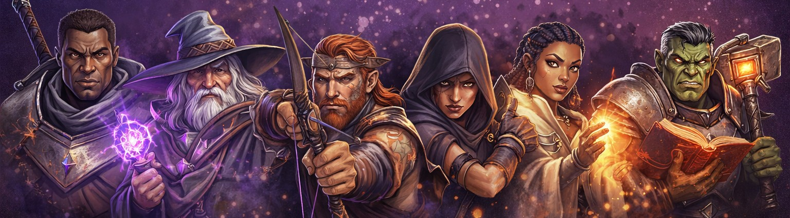

Personage maken in You-Meet-In-A-Tavern (YMIAT) volgt het Tales of the Valiant-raamwerk, aangepast voor het gestroomlijnde drie-vermogenssysteem. Deze gids leidt je stap voor stap door het maken van je personage.
Overzicht personage maken
Een personage maken in You-Meet-In-A-Tavern (YMIAT) omvat de volgende stappen, meestal in deze volgorde:
- Personageconcept
- Kies een Class
- Bepaal eigenschapsscores
- Kies een Afkomst
- Kies een Erfenis
- Kies een Achtergrond
- Bepaal startuitrusting
Als je personage klaar is, moet je ook begrijpen hoe levelen in jouw campagne werkt.
Op zoek naar een lichtere variant zonder class? Zie Classless.
Personageconcept
Voordat je in de mechanische details van personage maken duikt, begin met een personageconcept. De belangrijkste vraag: wat voor personage wil je spelen?

Wat voor personage?
Denk na over hoe je personage uitdagingen en gevecht aanpakt. Dat helpt bij je classkeuze en de verdeling van eigenschapsscores. Veelvoorkomende types:
Melee-vechter: Een personage dat van dichtbij vecht met wapens zoals zwaarden, bijlen of hamers. Vaak op de frontlinie, bondgenoten beschermen en Wonden in melee toebrengen. Deze personages prioriteren typisch Fitness en kiezen classes zoals Fighter, Barbarian, Paladin of Monk.
Magiegebruiker: Een personage dat spells cast om Wonden te doen, bondgenoten te steunen of het slagveld te controleren. Ze steunen op hun spellcasting-vermogen (Insight voor de meeste casters, Willpower voor Bards, Sorcerers en Warlocks) en blijven vaak op afstand. Classes: Wizard, Cleric, Druid, Sorcerer, Warlock en Bard.
Afstandsvechter: Een personage dat van afstand aanvalt met bogen, crossbows of geworpen wapens. Ze houden afstand terwijl ze consistente Wonden toebrengen. Rangers, sommige Fighters en personages met afstandswapens passen hier. Typisch goede Fitness voor precisie.
Sluipend personage: Een personage dat steunt op stealth, sluwheid en precisieaanvallen. Misschien een Rogue die rondsluipt, vanuit de schaduwen toeslaat en vallen ontmantelt, of iemand die deception en misleiding gebruikt. Deze personages balanceren vaak Fitness (voor stealth en gevecht) met Insight of Willpower (voor sociale situaties en probleemoplossing).
Support-personage: Een personage dat zich richt op helpen en beschermen van bondgenoten in plaats van zelf Wonden te doen. Healing, buffs, debuffs of battlefield control. Clerics, Bards en sommige Druids blinken hierin uit; typisch prioriteit voor hun spellcasting-vermogen.
Hybride personage: Een personage dat meerdere aanpakken combineert. Bijvoorbeeld een Paladin die in melee vecht maar ook spells cast, of een Ranger die zowel afstandswapens als nature-magie gebruikt. Deze personages moeten vaak meerdere vermogens balanceren.
Je personagetype beïnvloedt welke class je kiest en hoe je je vermogensmodifiers verdeelt. Weet je het nog niet zeker — dat is oké; je kunt je concept aanscherpen terwijl je personage maakt.
Andere overwegingen
Het personagetype is het belangrijkste startpunt, maar je kunt ook nadenken over:
- Wat is de basispersoonlijkheid van je personage? (Dat kan tijdens het spel groeien)
- Wat motiveert hen om avontuur te zoeken? (Dat kan eenvoudig zijn: schat zoeken, anderen beschermen, verkennen, enz.)
- Welke rol spelen ze in de party? (Dat volgt vaak uit je personagetype)
Je personageconcept hoeft in dit stadium niet volledig te zijn — het kan evolueren terwijl je keuzes maakt. Een basisidee van je type helpt wel bij keuzes over class, afkomst, erfenis en achtergrond, zodat de mechanische stukken samen een samenhangend personage vormen.
Onthoud: de mechanische keuzes moeten je concept ondersteunen en versterken, niet beperken. You-Meet-In-A-Tavern (YMIAT) is flexibel genoeg voor een breed scala aan personage-ideeën.
Kies een Class
Je class staat voor het beroep en de primaire rol van je personage in de party. Die bepaalt je Max. wonden, behendigheden, class features en spellcasting-vermogen (indien van toepassing).
You-Meet-In-A-Tavern (YMIAT) gebruikt dertien classes aangepast uit het Black Flag Reference Document, gecomprimeerd tot 10 niveaus met subclass features op niveau 2, 4, 6 en 8. Zie de volledige pagina Classes voor progressietabellen, features en subclasses.
| Class | Max WD | Sleutelvermogen | Rol |
|---|---|---|---|
| Barbarian | 12 | Fitness | Primal melee-krijger |
| Bard | 8 | Willpower | Support, performance, arcane magie |
| Cleric | 8 | Insight | Divine healer en kampioen |
| Druid | 8 | Insight | Primordial magie, wild shape |
| Fighter | 10 | Fitness | Wapenmeester, slagveldtactiek |
| Artificer | 8 | Insight | Uitvinder, uitrustingsverbetering |
| Monk | 8 | Fitness | Martial artist, technique points |
| Paladin | 10 | Fitness | Heilige krijger, divine smites |
| Ranger | 10 | Fitness | Wildernishunter, mystic mark |
| Rogue | 8 | Fitness | Stealth, sneak attack |
| Sorcerer | 6 | Willpower | Aangeboren arcane magie, metamagic |
| Warlock | 8 | Willpower | Pact magic, eldritch invocations |
| Wizard | 6 | Insight | Geleerde arcane caster |
- Fitness-gebaseerde classes: Barbarian, Fighter, Monk, Paladin, Ranger, Rogue
- Insight-gebaseerde classes: Artificer, Cleric, Druid, Wizard
- Willpower-gebaseerde classes: Bard, Sorcerer, Warlock
Je class bepaalt welke vermogensmodifier je gebruikt voor spellcasting, class features en bepaalde saves. Max. wonden op niveau 1 is gelijk aan de class-startwaarde plus je Fitness-modifier; zie Wonden en schaal.
Eigenschapsscores bepalen
You-Meet-In-A-Tavern (YMIAT) gebruikt drie kernvermogens: Fitness, Insight en Willpower. Anders dan in traditionele systemen werk je rechtstreeks met modifiers, niet met onderliggende scores.
Je hebt drie methoden om je vermogensmodifiers te bepalen. Je Spelleider zegt welke methode je gebruikt, of je kiest er een die bij de speelstijl van je groep past.
Drie manieren om te scoren
Methode 1: Rollen
Deze methode wordt nog uitgewerkt. Rollen voor vermogensmodifiers in You-Meet-In-A-Tavern (YMIAT) vraagt een andere aanpak dan traditionele systemen, omdat we rechtstreeks met modifiers werken.
Voorlopig gebruiken groepen die deze methode willen een van de andere twee methoden, of werken ze met de Spelleider een rollsysteem uit dat bij de drie-vermogensmodifiers past.
Methode 2: Point-buy
Deze methode geeft je controle over je vermogensmodifiers met behoud van balans. Je begint met 3 modifierpunten om te verdelen over Fitness, Insight en Willpower.
- Startwaarde per vermogen: 0
- Maximum per vermogen: +2
- Minimum per vermogen: −1
- Je mag punten “lenen” door een vermogen onder 0 te zetten, tot een minimum van −1, om meer punten voor andere vermogens te krijgen.
Voorbeeld: Je kunt een personage maken met Fitness +2, Insight +1, Willpower 0, of Fitness +2, Insight +2, Willpower −1 (1 punt geleend van Willpower).
Methode 3: Standaardarray
Dit is de eenvoudigste methode en zorgt dat alle personages met gebalanceerde modifiers starten. Wijs de modifiers +2, +1 en +0 toe aan Fitness, Insight en Willpower in willekeurige volgorde.
Voorbeeld: Een fighter zou +2 aan Fitness, +1 aan Willpower en +0 aan Insight kunnen geven. Een wizard zou +2 aan Insight, +1 aan Fitness en +0 aan Willpower kunnen geven.
Geen vermogen mag met deze methode hoger starten dan +2.
Kies een Afkomst
Je afkomst staat voor de afstamming van je personage en geeft fundamentele traits die bepalen wie je bent. In Tales of the Valiant vervangen lineages het traditionele race-systeem (of “species” in D&D-terminologie) en bieden een flexibelere aanpak van personage-afstamming.
Kies een afkomst die bij je personageconcept past. Elke afkomst geeft specifieke traits, eigenschapsscore-verhogingen (die je aanpast aan het drie-vermogenssysteem van You-Meet-In-A-Tavern (YMIAT)) en andere vermogens.
Let op: Bij het toepassen van eigenschapsscore-verhogingen van een afkomst op You-Meet-In-A-Tavern (YMIAT) overleg je met je Spelleider hoe traditionele eigenschapsscore-bonussen vertalen naar Fitness-, Insight- of Willpower-modifiers. Over het algemeen:
- Fysieke bonussen (Strength, Dexterity, Constitution) → Fitness
- Mentale bonussen (Intelligence, Wisdom) → Insight
- Sociale bonussen (Charisma) → Willpower
Geeft een afkomst bonussen op meerdere vermogens die naar hetzelfde You-Meet-In-A-Tavern (YMIAT)-vermogen mappen, dan moet je mogelijk bijstellen of alternatieven met je Spelleider bespreken.
Voor gedetailleerde informatie over beschikbare afkomsten: zie de pagina Afkomsten.
Kies een Erfenis
Erfenis staat voor een specifieke culturele of biologische variant binnen je afkomst. Die geeft extra traits en features die je personage verder personaliseren.
Je erfeniskeuze staat los van je afkomst en voegt een extra laag customisatie toe. Elke afkomst heeft typisch meerdere erfenisopties.
Kies een erfenis die je personageconcept en classkeuze aanvult. Erfenisfeatures werken naast je afkomst-traits en class features.
Voor gedetailleerde informatie over beschikbare erfenissen: zie de pagina Erfenissen.
Kies een Achtergrond
Je achtergrond staat voor het leven van je personage vóór het avonturiersschap. Die geeft skills, tool-behendigheden, talen, uitrusting en een feature die je verleden weerspiegelt.
In You-Meet-In-A-Tavern (YMIAT) werken achtergronden vergelijkbaar met Tales of the Valiant, maar onthoud: skills zijn optionele toevoegingen op je kernvermogens (Fitness, Insight, Willpower). Alleen skills die expliciet door je achtergrond, class of talenten worden gegeven zijn Proficient — tel je PB op bij eigenschapstests met die skills.
Kies een achtergrond die bij het verhaal van je personage past. Je kunt ook met je Spelleider een custom achtergrond maken die de unieke geschiedenis van je personage beter dekt.
Voor gedetailleerde informatie over beschikbare achtergronden: zie de pagina Achtergronden.
Startuitrusting
Je hebt twee methoden om je startuitrusting te bepalen. Je classbeschrijving en achtergrond geven aan welke methode je gebruikt, of je Spelleider heeft een voorkeur.
Methode 1: Neem class- & achtergronduitrusting
Dit is de eenvoudigste methode. Je krijgt de uitrusting uit de startuitrusting van je class, plus de uitrusting van je achtergrond.
Zo begin je met passende uitrusting voor je class en achtergrond zonder startkapitaal bij te houden of aankoopbeslissingen te nemen.
Methode 2: Bepaal startvermogen & koop uitrusting
Deze methode geeft meer flexibiliteit maar vraagt meer keuzes. In plaats van de vermelde uitrusting krijg je startkapitaal op basis van je class en kun je uitrusting kopen van de uitrustingslijsten.
Je classbeschrijving geeft je startkapitaal (typisch in silver pieces). Daarna kun je wapens, pantser, avonturiersuitrusting en andere uitrusting kopen binnen je budget.
Deze methode is handig als je specifieke uitrustingscombinaties wilt die niet in de standaard startpakketten zitten.
Levelen
Naarmate je personage avonturen beleeft, krijgt het ervaring en stijgt het in niveau. You-Meet-In-A-Tavern (YMIAT)-personages gaan van niveau 1 tot niveau 10; elk niveau staat grofweg voor twee niveaus uit traditioneel fifth edition-spel.
Je Spelleider bepaalt welke levelmethode je campagne gebruikt. Beide methoden zijn geldig; de keuze hangt af van de voorkeuren van je groep.
Levelmethoden
XP toekennen
Bij deze methode krijgen personages ervaringpunten (XP) voor het overwinnen van uitdagingen, verslaan van vijanden, voltooien van quests en behalen van doelen. Wanneer een personage genoeg XP heeft, stijgt het naar het volgende niveau.
De Spelleider kent XP toe op basis van de moeilijkheid van encounters en prestaties. Deze methode geeft duidelijke, meetbare voortgang en een gevoel van vooruitgang via opgebouwde punten.
You-Meet-In-A-Tavern (YMIAT) gebruikt veel kleinere XP-getallen dan fifth edition. XP is een lopend totaal; elke stap kost meer dan de vorige (100 om niveau 2 te bereiken, 200 om 3 te bereiken, enzovoort), dus het totale XP om een niveau te bereiken is 100 × (niveau − 1) × niveau ÷ 2 — niveau 2 bij 100 XP, niveau 3 bij 300 XP, niveau 10 bij 4.500 XP. Zie Ervaringpunten in de Kernregels voor de volledige drempeltabel, de toekenningstabel (Triviaal tot Bijna onmogelijk), en hoe levelen naar beneden het XP-totaal beïnvloedt.
Mijlpalen bijhouden
Bij deze methode stijgen personages naar het volgende niveau wanneer ze belangrijke verhaal-mijlpalen bereiken, in plaats van XP op te stapelen. De Spelleider bepaalt wanneer mijlpalen bereikt zijn, typisch na:
- Het voltooien van een grote quest of verhaallijn
- Het bereiken van een belangrijke locatie of het behalen van een belangrijk doel
- Het overwinnen van een bijzonder uitdagende encounter of obstakel
- Iets bereiken dat het verhaal van de campagne vooruitbrengt
Deze methode focust op verhaalprogressie in plaats van mechanische puntentelling. Ideaal voor narratief gedreven campagnes waarin het tempo van het verhaal belangrijker is dan getallen bijhouden.
Mijlpaal-levelen is vaak eenvoudiger voor Spelleiders en zorgt dat alle personages samen levelen op passende verhaalmomenten.
Let op: Welke methode je ook gebruikt: onthoud dat You-Meet-In-A-Tavern (YMIAT) een gecomprimeerd niveausysteem gebruikt. Elk niveau staat voor betekenisvolle groei, en levelen moet voelbaar en impactvol zijn.